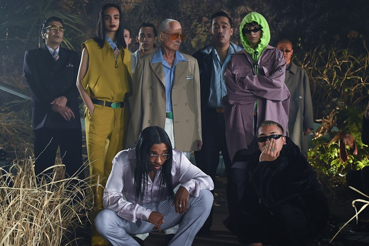

TTT_MSW
18AW
TTT_MSWは、文化服装学院の出身の玉田翔太がデザイナーを務め、19歳の時にスタートしたブランドだ。
玉田デザイナーは自身のコミュニティが特徴的で、オカモトズのドラマーオカモトレイジや、ラッパーのkzmなど多彩な友人コミュニティを持っている。
友達が着ている服からインスピレーションを受け、ブランドネームはT(玉田翔太)とmsw(モダンストリートウェア)といった意味で、モダンでありながらもライフスタイルに落とし込める服がテーマとなっているらしい。
そしてクリエーションにおいては、とにかく幅が広いのが特徴で「ストーリート」や「ドレス」など様々な雰囲気をシーズンごとに変化させているのが他のブランドにはない。こういった、「規定されない服」こそがデザイナー玉田翔太のクリエーションの凄みだと著者は感じている。
このシーズンは「架空のマフィア」がテーマであり、「Amazon Fashion Week TOKYO 2018 A/W」といったAmazonの企画するファッションウィークに参加し、ショーを行った重要なシーズンだ。
このショーにはモデルとして玉田翔太の友人が沢山起用されていて、ブランドを象徴づけるとても大きなショーとなった。
またこのショーにおいて最も力を入れているのがその演出。観客には事前にCGで作成された映像を見せた。その内容は一台の車が木に激突してしまうというもの。しかもステージには激突し、止まってしまった車がそのままの状態で置かれている。その車内には「Half Eyes Purple Dragon」という名のマフィアが10名乗っているらしい。
ショーが始まると次々にマフィアたちがモデルとして、車内から降りてくる...。こういった一連の演出も手が込んでいてカッコいい。
このルックを見たとき著者は、この本気の雰囲気に圧倒された。
デザイナー自ら映画を見てマフィアの服装を自ら研究したというこのコレクションは、ジャケットはマフィアさながらのオ―バーサイズで、肩パットのしっかり入ったパワーショルダー。中のシャツの光沢が生み出す高級感まですばらしい。
ルックに出演するモデルのポテンシャルと、デザイナーの技術あってこその空気感が構築されていると感じた。
20SS
これはティーの最新シーズンからの一枚。
この美しいグラフィックのニットベストはアメリカのヨセミテ国立公園が表現されている。
20ssのシーズンは自然がテーマになっており、他にも花の刺繍などが施されたパンツや、キャップなどもある。とてもナチュラルでかわいらしいプロダクトが多いのも20ssの特徴だ。
前述の18awとはまた打って変わった、空気感の異なるシーズンだということは言うまでもない。
このようにTTT_MSWは型にはまらず、様々なことに興味を持つデザイナーの寛容さが非常に詰まったブランドだ。
20awも発表されたので、さっそくチェックすることを強くお勧めする。